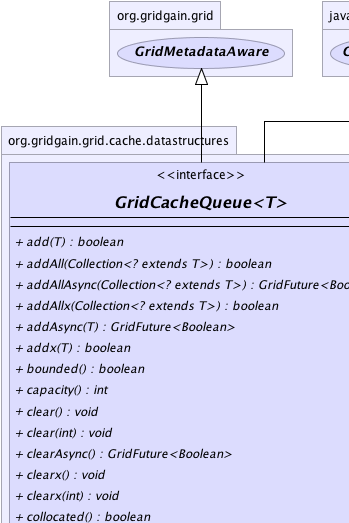
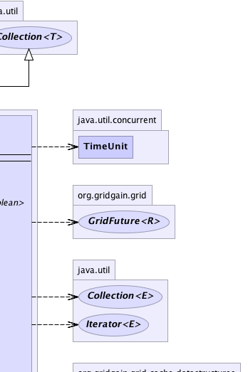
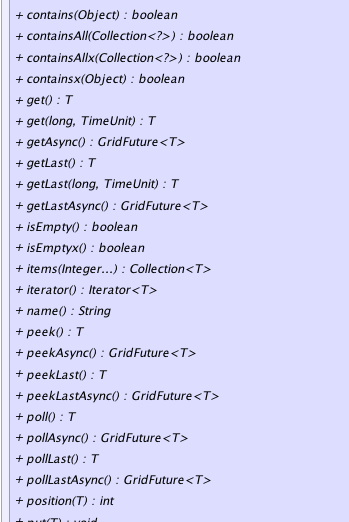
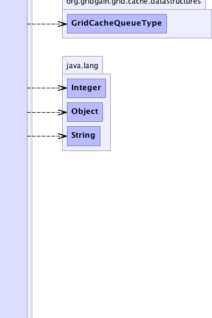
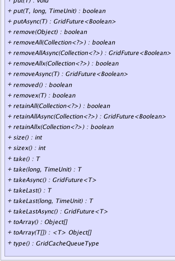
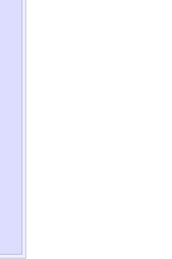

|
|

|

|
|

|

|

|
GridGain™ 3.6.0c
Community Edition |
|||||||||
| PREV CLASS NEXT CLASS | FRAMES NO FRAMES | |||||||||
| SUMMARY: NESTED | FIELD | CONSTR | METHOD | DETAIL: FIELD | CONSTR | METHOD | |||||||||
public interface GridCacheQueue<T>
This interface provides a rich API for working with Data Grid-based distributed queues.
Note that queues are only available in Enterprise Edition.
Collection interface and provides all methods from collections including
Collection.addAll(Collection), Collection.removeAll(Collection), and
Collection.retainAll(Collection) methods for bulk operations. Note that all
Collection methods in the queue may throw GridRuntimeException in case
of failure. If you prefer to catch checked exceptions, use methods that end with
'x', such as GridCacheQueue.addx(Object) for example, which throw GridException.
All queue operations have synchronous and asynchronous counterparts.
unbounded or bounded. Bounded queues can
have maximum capacity. Queue capacity can be set at creation time and cannot be
changed later. Here is an example of how to create bounded LIFO queue with
capacity of 1000 items.
GridCacheQueue<String> queue = cache().queue("anyName", LIFO, 1000);
...
queue.add("item");
For bounded queues blocking operations, such as GridCacheQueue.take() or GridCacheQueue.put(Object)
are available. These operations will block until queue capacity changes to make the operation
possible.
GridCacheQueueType documentation.
Priority queues allow for sorting queue items by priority. Priority in the queue item can
be set using annotation GridCacheQueuePriority. Only one field or method can be annotated
with priority in queue item class. Annotated fields or methods must be of int or Integer
types. Here is an example of how annotate queue item:
private static class PriorityMethodItem {
// Priority field.
private final int priority;
private PriorityMethodItem(int priority) {
this.priority = priority;
}
// Annotated priority method.
@GridCacheQueuePriority
int priority() {
return priority;
}
}
collocated parameter). Non-collocated mode is provided only
for partitioned caches. If collocated parameter is true, then all queue items
will be collocated on one node, otherwise items will be distributed through all grid nodes.
Unless explicitly specified, by default queues are collocated.
Here is an example of how create unbounded GridCacheQueueType.PRIORITY queue
in non-collocated mode.
GridCacheQueue<String> queue = cache().queue("anyName", PRIORITY, 0 /*unbounded*/, false /*non-collocated*/);
...
queue.add("item");
GridCache API:
GridCache.queue(String)GridCache.queue(String, GridCacheQueueType)GridCache.queue(String, GridCacheQueueType, int)GridCache.queue(String, GridCacheQueueType, int, boolean)
| Wiki | |
| Forum |
GridCache.queue(String),
GridCache.queue(String, GridCacheQueueType),
GridCache.queue(String, GridCacheQueueType, int),
GridCache.queue(String, GridCacheQueueType, int, boolean)
|  |  |
|  |  |
|  |  |
| Method Summary | ||
|---|---|---|
boolean |
add(T item)
Adds specified item to the queue without blocking. |
|
boolean |
addAll(Collection<? extends T> items)
Bulk operation for adding more than one item to queue at once without blocking. |
|
GridFuture<Boolean> |
addAllAsync(Collection<? extends T> items)
Asynchronous bulk operation for adding more than one item to queue at once. |
|
boolean |
addAllx(Collection<? extends T> items)
Bulk operation for adding more than one item to queue at once without blocking. |
|
GridFuture<Boolean> |
addAsync(T item)
Asynchronously adds specified item to the queue. |
|
boolean |
addx(T item)
Adds specified item to the queue without blocking. |
|
boolean |
bounded()
Returns true if this queue is bounded. |
|
int |
capacity()
Gets maximum number of elements of the queue. |
|
void |
clear()
Removes all of the elements from this queue. |
|
void |
clear(int batchSize)
Removes all of the elements from this queue. |
|
GridFuture<Boolean> |
clearAsync()
Clears the queue asynchronously. |
|
void |
clearx()
Removes all of the elements from this queue. |
|
void |
clearx(int batchSize)
Removes all of the elements from this queue. |
|
boolean |
collocated()
Returns true if this queue can be kept on the one node only. |
|
boolean |
contains(Object item)
Returns true if this queue contains the specified element. |
|
boolean |
containsAll(Collection<?> items)
Returns true if this queue contains all of the elements
in the specified collection. |
|
boolean |
containsAllx(Collection<?> items)
Returns true if this queue contains all of the elements
in the specified collection. |
|
boolean |
containsx(Object item)
Returns true if this queue contains the specified element. |
|
T |
get()
Retrieves, but does not remove, the head of this queue. |
|
T |
get(long timeout,
TimeUnit unit)
Try to retrieve but does not remove the head of this queue within given timeout. |
|
GridFuture<T> |
getAsync()
Try to retrieve but does not remove the tail of this queue asynchronously. |
|
T |
getLast()
Retrieves, but does not remove, the tail of this queue. |
|
T |
getLast(long timeout,
TimeUnit unit)
Try to retrieve but does not remove the tail of this queue within given timeout. |
|
GridFuture<T> |
getLastAsync()
Try to retrieve but does not remove the tail of this queue asynchronously. |
|
boolean |
isEmpty()
Returns true if this queue contains no elements. |
|
boolean |
isEmptyx()
Returns true if this queue contains no elements. |
|
Collection<T> |
items(Integer... positions)
Gets items from the queue at specified positions. |
|
Iterator<T> |
iterator()
Returns an iterator over the elements in this queue. |
|
String |
name()
Gets queue name. |
|
T |
peek()
Retrieves, but does not remove, the head of this queue, or returns null if this queue is empty. |
|
GridFuture<T> |
peekAsync()
Asynchronously retrieves, but does not remove, the head of this queue. |
|
T |
peekLast()
Retrieves, but does not remove, the tail of this queue, or returns null if this queue is empty. |
|
GridFuture<T> |
peekLastAsync()
Asynchronously retrieves, but does not remove, the tail of this queue. |
|
T |
poll()
Retrieves and removes the head item of the queue, or returns null if this queue is empty. |
|
GridFuture<T> |
pollAsync()
Asynchronously retrieves and removes the head item of the queue. |
|
T |
pollLast()
Retrieves and removes the tail item of the queue, or returns null if this queue is empty. |
|
GridFuture<T> |
pollLastAsync()
Retrieves and removes the tail item of the queue. |
|
int |
position(T item)
Gets position of the specified item in the queue. |
|
void |
put(T item)
Puts specified item to the queue. |
|
boolean |
put(T item,
long timeout,
TimeUnit unit)
Try to put specified item to the queue during timeout. |
|
GridFuture<Boolean> |
putAsync(T item)
Puts specified item to the queue asynchronously. |
|
boolean |
remove(Object item)
Removes a single instance of the specified element from this queue, if it is present. |
|
boolean |
removeAll(Collection<?> items)
Bulk operation that removes all of this queue's elements that are also contained in the specified collection. |
|
GridFuture<Boolean> |
removeAllAsync(Collection<?> items)
Asynchronous bulk operation that removes all of this queue's elements that are also contained in the specified collection. |
|
boolean |
removeAllx(Collection<?> items)
Bulk operation that removes all of this queue's elements that are also contained in the specified collection. |
|
GridFuture<Boolean> |
removeAsync(T item)
Asynchronously removes a single instance of the specified element from this queue, if it is present. |
|
boolean |
removed()
Gets status of queue. |
|
boolean |
removex(T item)
Removes a single instance of the specified element from this queue, if it is present. |
|
boolean |
retainAll(Collection<?> items)
Retains only the elements in this queue that are contained in the specified collection. |
|
GridFuture<Boolean> |
retainAllAsync(Collection<?> items)
Retains only the elements in this queue that are contained in the specified collection. |
|
boolean |
retainAllx(Collection<?> items)
Retains only the elements in this queue that are contained in the specified collection. |
|
int |
size()
Returns the number of elements in this queue. |
|
int |
sizex()
Gets size of the queue. |
|
T |
take()
Retrieves and removes the head item of the queue. |
|
T |
take(long timeout,
TimeUnit unit)
Try to retrieve and remove the head item of the queue during timeout. |
|
GridFuture<T> |
takeAsync()
Retrieves and removes the head item of the queue asynchronously. |
|
T |
takeLast()
Retrieves and removes the tail item of the queue. |
|
T |
takeLast(long timeout,
TimeUnit unit)
Try to retrieve and remove the tail item of the queue during timeout. |
|
GridFuture<T> |
takeLastAsync()
Try to retrieve and remove the tail item of the queue asynchronously. |
|
Object[] |
toArray()
Returns an array containing all of the elements in this queue. |
|
|
toArray(T[] a)
Returns an array containing all of the elements in this queue; the runtime type of the returned array is that of the specified array. |
|
GridCacheQueueType |
type()
Gets queue type GridCacheQueueType. |
|
| Methods inherited from interface org.gridgain.grid.GridMetadataAware |
|---|
addMeta, addMetaIfAbsent, addMetaIfAbsent, allMeta, copyMeta, copyMeta, hasMeta, hasMeta, meta, putMetaIfAbsent, putMetaIfAbsent, removeMeta, removeMeta, replaceMeta |
| Methods inherited from interface java.util.Collection |
|---|
equals, hashCode |
| Method Detail |
|---|
String name()
GridCacheQueueType type()
GridCacheQueueType.
boolean add(T item)
throws GridRuntimeException
bounded and full, then
item will not be added and false will be returned.
If operation fails then GridRuntimeException is thrown.
add in interface Collection<T>GridRuntimeException - If operation failed.item - Item to add.
True if item was added, false if item wasn't added because queue is full.
boolean addx(T item)
throws GridException
bounded and full, then
item will not be added and false will be returned.
Unlike GridCacheQueue.add(Object), this method throws GridException if operation fails.
GridException - If operation failed.item - Queue item to add.
True if item was added, false if item wasn't added because queue is full.GridFuture<Boolean> addAsync(T item)
bounded and full, then
item will not be added and false will be returned from the future.
If operation fails then GridException is thrown.
item - Item to add.
boolean addAll(Collection<? extends T> items) throws GridRuntimeException
GridCacheQueue.add(Object) was called
multiple times).
If queue is bounded and does not have enough capacity to add all items, then none of the
items will be added and false will be returned.
addAll in interface Collection<T>GridRuntimeException - If operation failed.items - Items to add.
True if items were added, false if queue did not have enough capacity to
fit all the items.boolean addAllx(Collection<? extends T> items) throws GridException
GridCacheQueue.add(Object) was called
multiple times).
If queue is bounded and does not have enough capacity to add all items, then none of the
items will be added and false will be returned.
Unlike GridCacheQueue.addAll(Collection), this method throws GridException if operation fails.
GridException - If operation failed.items - Items to add.
True if items were added, false if queue did not have enough capacity to
fit all the items.GridFuture<Boolean> addAllAsync(Collection<? extends T> items)
GridCacheQueue.add(Object) was called
multiple times).
If queue is bounded and does not have enough capacity to add all items, then none of the
items will be added and false will be returned from the future.
items - Items to add.
boolean contains(Object item)
throws GridRuntimeException
true if this queue contains the specified element.
contains in interface Collection<T>GridRuntimeException - If operation failed.item - Element whose presence in this queue is to be tested.
true If this queue contains the specified
element.
boolean containsx(Object item)
throws GridException
true if this queue contains the specified element.
Unlike GridCacheQueue.contains(Object), this method throws GridException
if operation fails.
GridException - If operation failed.item - Element whose presence in this queue is to be tested.
True if this queue contains the specified
element.boolean containsAll(Collection<?> items) throws GridRuntimeException
true if this queue contains all of the elements
in the specified collection.
containsAll in interface Collection<T>GridRuntimeException - If operation failed.items - Collection to be checked for containment in this queue.
True if this queue contains all of the elements
in the specified collection.boolean containsAllx(Collection<?> items) throws GridException
true if this queue contains all of the elements
in the specified collection.
Unlike GridCacheQueue.containsAll(Collection), this method throws GridException
if operation fails.
GridException - If operation failed.items - Collection to be checked for containment in this queue.
True if this queue contains all of the elements
in the specified collection.
void clear()
throws GridRuntimeException
clear in interface Collection<T>GridRuntimeException - if operation failed.
void clearx()
throws GridException
GridException - If operation failed.
void clear(int batchSize)
throws GridRuntimeException
GridRuntimeException - if operation failed.batchSize - Batch size.
void clearx(int batchSize)
throws GridException
GridException - If operation failed.batchSize - Batch size.
boolean remove(Object item)
throws GridRuntimeException
remove in interface Collection<T>GridRuntimeException - If operation failed.item - Element to be removed from this queue, if present.
True if an element was removed as a result of this call.
boolean removex(T item)
throws GridException
Unlike GridCacheQueue.remove(Object), this method throws GridException
if operation fails.
GridException - If operation failed.item - Item to delete.
True if an element was removed as a result of this call.GridFuture<Boolean> removeAsync(T item)
item - Item to delete.
boolean removeAll(Collection<?> items) throws GridRuntimeException
removeAll in interface Collection<T>GridRuntimeException - If operation failed.items - collection containing elements to be removed from this queue.
True if this queue changed as a result of the call.boolean removeAllx(Collection<?> items) throws GridException
Unlike GridCacheQueue.removeAll(Collection) this method throws GridException
if operation fails.
GridException - If operation failed.items - collection containing elements to be removed from this queue.
True if this queue changed as a result of the call.GridFuture<Boolean> removeAllAsync(Collection<?> items)
items - collection containing elements to be removed from this queue.
boolean isEmpty()
throws GridRuntimeException
true if this queue contains no elements.
isEmpty in interface Collection<T>GridRuntimeException - If operation failed.
True if this queue contains no elements.
boolean isEmptyx()
throws GridException
true if this queue contains no elements.
Unlike GridCacheQueue.isEmpty() this method throws GridException
if operation fails.
GridException - If operation failed.
True if this queue contains no elements.Iterator<T> iterator() throws GridRuntimeException
iterator in interface Collection<T>iterator in interface Iterable<T>GridRuntimeException
Object[] toArray()
throws GridRuntimeException
toArray in interface Collection<T>GridRuntimeException - If operation failed.
<T> T[] toArray(T[] a) throws GridRuntimeException
toArray in interface Collection<T>GridRuntimeException - If operation failed.a - The array into which the elements of this queue are to be
stored, if it is big enough; otherwise, a new array of the same
runtime type is allocated for this purpose.
boolean retainAll(Collection<?> items) throws GridRuntimeException
retainAll in interface Collection<T>GridRuntimeException - If operation failed.items - Collection containing elements to be retained in this collection.
True if this collection changed as a result of the call.boolean retainAllx(Collection<?> items) throws GridException
GridException - If operation failed.items - Collection containing elements to be retained in this collection.
True if this collection changed as a result of the call.GridFuture<Boolean> retainAllAsync(Collection<?> items)
items - Collection containing elements to be retained in this collection.
int size()
throws GridRuntimeException
size in interface Collection<T>GridRuntimeException - If operation failed.
@Nullable
T poll()
throws GridException
null if this queue is empty.
GridException - If operation failed.
GridFuture<T> pollAsync()
null if this queue is empty.
@Nullable
T pollLast()
throws GridException
null if this queue is empty.
GridException - If operation failed.
GridFuture<T> pollLastAsync()
null if this queue is empty.
@Nullable
T peek()
throws GridException
null if this queue is empty.
GridException - If operation failed.
null if this queue is empty.GridFuture<T> peekAsync()
null if this queue is empty.
@Nullable
T peekLast()
throws GridException
null if this queue is empty.
GridException - If operation failed.
GridFuture<T> peekLastAsync()
null if this queue is empty.
int position(T item)
throws GridException
0.
Note this operation is supported only in collocated mode.
GridException - If operation failed or operations executes in non-collocated mode.item - Item to get position for.
-1 if item is not found.@Nullable Collection<T> items(Integer... positions) throws GridException
0.
Note this operation is supported only in collocated mode.
GridException - If operation failed or operations executes in non-collocated mode.positions - Positions of items to get from queue.
void put(T item)
throws GridException
GridException - If operation failed.item - Queue item to put.
boolean put(T item,
long timeout,
TimeUnit unit)
throws GridException
GridException - If operation failed.item - Queue item to put.timeout - Timeout.unit - Type of time representations.
false if timed out while waiting for queue to go below maximum capacity,
true otherwise. If queue is not bounded, then true is always returned.GridFuture<Boolean> putAsync(T item)
item - Queue item to put.
@Nullable
T take()
throws GridException
GridException - If operation failed.
@Nullable
T takeLast()
throws GridException
GridException - If operation failed.
@Nullable
T take(long timeout,
TimeUnit unit)
throws GridException
GridException - If operation failed or timeout was exceeded.timeout - Timeout.unit - Type of time representations.
null if method timed out
before queue had at least one item.
@Nullable
T takeLast(long timeout,
TimeUnit unit)
throws GridException
GridException - If operation failed or timeout was exceeded.timeout - Timeout.unit - Type of time representations.
null if method timed out
before queue had at least one item.GridFuture<T> takeAsync()
GridFuture<T> takeLastAsync()
@Nullable
T get()
throws GridException
GridException - If operation failed.
@Nullable
T getLast()
throws GridException
GridException - If operation failed.
@Nullable
T get(long timeout,
TimeUnit unit)
throws GridException
GridException - If operation failed or timeout was exceeded.timeout - Timeout.unit - Type of time representations.
null if method timed out
before queue had at least one item.
@Nullable
T getLast(long timeout,
TimeUnit unit)
throws GridException
GridException - If operation failed or timeout was exceeded.timeout - Timeout.unit - Type of time representations.
null if method timed out
before queue had at least one item.GridFuture<T> getAsync()
GridFuture<T> getLastAsync()
GridFuture<Boolean> clearAsync()
int sizex()
throws GridException
GridException - If operation failed.
int capacity()
throws GridException
GridException - If operation failed.
Integer.MAX_SIZE will return.
boolean bounded()
throws GridException
true if this queue is bounded.
GridException - If operation failed.
true if this queue is bounded.
boolean collocated()
throws GridException
true if this queue can be kept on the one node only.
Returns false if this queue can be kept on the many nodes.
GridException - If operation failed.
true if this queue is in collocated mode false otherwise.boolean removed()
true if queue was removed from cache false otherwise.
|
GridGain™ 3.6.0c
Community Edition |
|||||||||
| PREV CLASS NEXT CLASS | FRAMES NO FRAMES | |||||||||
| SUMMARY: NESTED | FIELD | CONSTR | METHOD | DETAIL: FIELD | CONSTR | METHOD | |||||||||
|
GridGain - Real Time Big Data
|
|
|
|